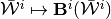
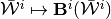
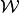
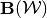
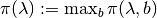
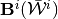
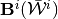

8. Bilinear programs and SSE operator¶
Here we give an overview of our main computational insight and proposed method for constructing the operators  , and .
, and .
Given a candidate correspondence , evaluating the symmetric sequential equilibrium (SSE) operator at this point in the set of compact and convex-valued correspondences (see Definition 3 in the paper), , will involve:
Calculating state-dependent max-min punishment values, .
- We show that this is amenable to a separable bilinear program (BLP).
- We will describe how these BLPs are solved to
 -global optimality.
-global optimality.
Given
 , compute the total-payoff sets supported by action-states-continuation-value tuples,
, compute the total-payoff sets supported by action-states-continuation-value tuples,  , that are admissible with respect to :
, that are admissible with respect to :- We will show that this consists of subproblems that are non-separable BLPs.
- These can be solved by a specific stochastic global optimization problem that involves sub-problems that are linear programs (LP).
We adapt Steps 1 and 2 above for both outer- and inner-approximations, respectively, yielding approximate outer- and inner evaluations of the step-correspondence images
 and .
and .